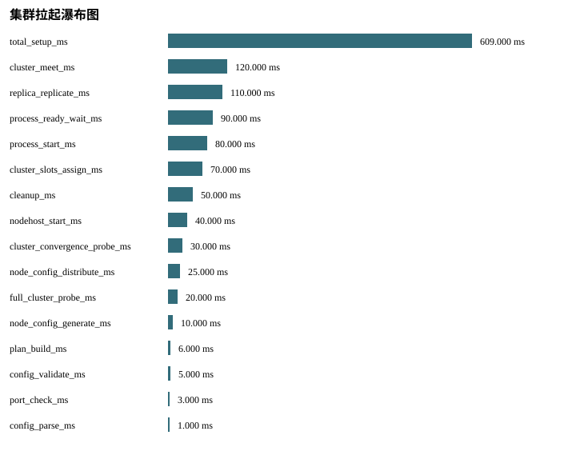

Status: PASS
Source phase: M1-S02
| 字段 | 值 |
|---|---|
| run_id | m1-s02-local |
| created_at | 2026-07-08T14:06:06Z |
| git_sha | 574271eaf8254d1f7e9180dfbd8c7b1ca9facd32 |
| valkey_version | MISSING: Valkey endpoints were not probed while creating run metadata. |
| artifact_root | runs/m1-s02-local/artifacts |
| Name | Status |
|---|---|
| source_phase | PASS |
| real_valkey_evidence | BLOCKED_WITH_REASON |
| failover | SKIPPED_WITH_REASON |
| cleanup | PASS |
| setup_telemetry | PASS |
| 指标 | 状态 | 原因 |
|---|---|---|
| split_brain_duration_ms | SKIPPED_WITH_REASON | No failover scenario is executed in M1-S02. |

| 阶段指标 | 耗时 ms |
|---|---|
| total_setup_ms | 609.0 |
| cluster_meet_ms | 120.0 |
| replica_replicate_ms | 110.0 |
| process_ready_wait_ms | 90.0 |
| process_start_ms | 80.0 |
| cluster_slots_assign_ms | 70.0 |
| cleanup_ms | 50.0 |
| nodehost_start_ms | 40.0 |
| cluster_convergence_probe_ms | 30.0 |
| node_config_distribute_ms | 25.0 |
| full_cluster_probe_ms | 20.0 |
| node_config_generate_ms | 10.0 |
| 节点 | ready ms | 角色 | 状态 |
|---|---|---|---|
| shard-0000-replica-00 | 90.0 | replica | ok |